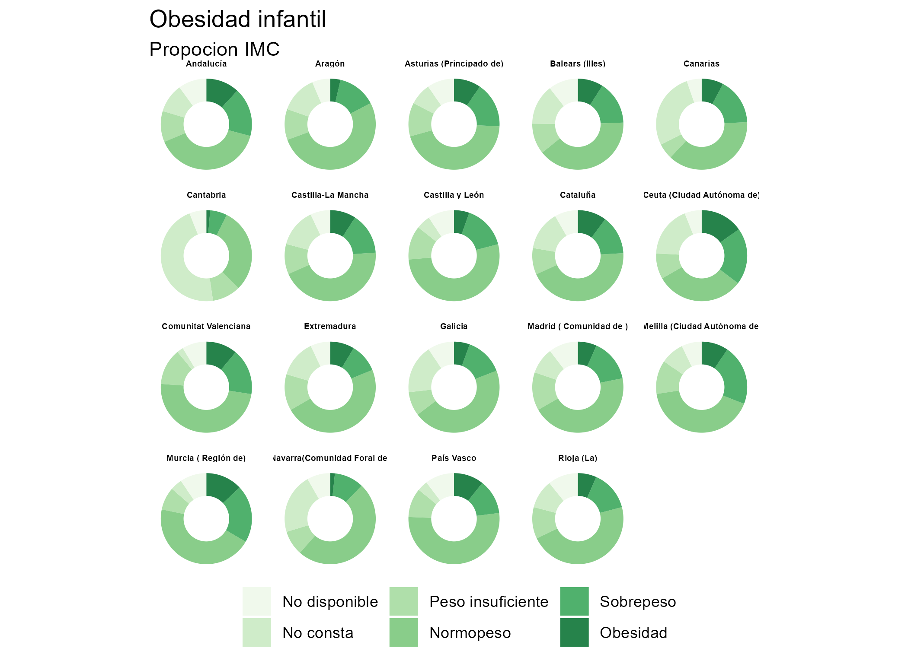

Author: Edu Gonzalo Almorox
enseResp is a R package to tidily access healthcare data from the Spanish Health Survey (SHS) released by the Spanish Health Ministry. The main goal of enseResp is to provide data ready for analysis for researchers or other stakeholders interested in exploring health microdata in Spain.
The current version of enseResp provides information about the SNS editions of 2017/19, 2011/12 and 2006/07 and compiles the surveys associated with the adult, children and household samples.
Installation
You can install the development version from GitHub with:
# install.packages("devtools")
devtools::install_github("edugonzaloalmorox/enseResp")Load main datasets
This package contains surveys formatted to be convenient for being accessed and analysed. The current version of the package is composed of the following datsets:
-
adults_19: Dataset for adults survey for 2017/19 -
children_19: Dataset for children survey for 2017/19 -
household_19: Dataset for household survey for 2017/19 -
adults_12: Dataset for adults survey for 2011/12 -
children_12: Dataset for children survey for 2011/12 -
household_12: Dataset for household survey for 2011/12 -
adults_06: Dataset for adults survey for 2006/07 -
children_06: Dataset for children survey for 2006/07 -
household_06: Dataset for household survey for 2006/07
This is a basic example of how to obtain a dataset. For example, the survey of adults corresponding to 2017-19 survey.
library(enseResp)
library(dplyr)
#>
#> Attaching package: 'dplyr'
#> The following objects are masked from 'package:stats':
#>
#> filter, lag
#> The following objects are masked from 'package:base':
#>
#> intersect, setdiff, setequal, union
enseResp::adults_19
#> # A tibble: 23,089 x 455
#> CCAA IDENTHOGAR A7_2a SEXOa EDADa ACTIVa PROXY_0 PROXY_1 PROXY_2 PROXY_2b
#> <chr> <chr> <chr> <dbl> <chr> <dbl> <dbl> <dbl> <dbl> <chr>
#> 1 16 00001011 01 2 084 3 1 NA NA <NA>
#> 2 16 00001021 04 1 026 1 1 NA NA <NA>
#> 3 16 00001041 02 2 056 5 1 NA NA <NA>
#> 4 16 00001051 01 1 070 3 1 NA NA <NA>
#> 5 16 00001071 01 1 061 3 1 NA NA <NA>
#> 6 16 00001091 01 2 035 1 1 NA NA <NA>
#> 7 16 00001101 01 2 055 1 1 NA NA <NA>
#> 8 16 00001131 02 1 038 1 1 NA NA <NA>
#> 9 16 00001151 01 1 039 2 1 NA NA <NA>
#> 10 16 00002011 01 2 080 3 1 NA NA <NA>
#> # … with 23,079 more rows, and 445 more variables: PROXY_3b <dbl>,
#> # PROXY_4 <chr>, PROXY_5 <dbl>, E1_1 <dbl>, E2_1a <dbl>, E2_1b <dbl>,
#> # E2_1c <dbl>, E2_1d <dbl>, E3 <chr>, E4 <dbl>, E4b <dbl>, NIVEST <chr>,
#> # F6 <dbl>, F7 <dbl>, F8_2 <chr>, F9_2 <chr>, F10 <dbl>, F11 <dbl>,
#> # F12 <dbl>, F13 <chr>, F14a <dbl>, F14b <dbl>, F15 <dbl>, F16 <dbl>,
#> # F17 <chr>, F18a_2 <chr>, F18b_2 <chr>, F19a_2 <dbl>, F19b_2 <chr>,
#> # F20 <dbl>, G21 <dbl>, G22 <dbl>, G23 <dbl>, G24 <dbl>, G25a_1 <dbl>,
#> # G25b_1 <dbl>, G25c_1 <dbl>, G25a_2 <dbl>, G25b_2 <dbl>, G25c_2 <dbl>,
#> # G25a_3 <dbl>, G25b_3 <dbl>, G25c_3 <dbl>, G25a_4 <dbl>, G25b_4 <dbl>,
#> # G25c_4 <dbl>, G25a_5 <dbl>, G25b_5 <dbl>, G25c_5 <dbl>, G25a_6 <dbl>,
#> # G25b_6 <dbl>, G25c_6 <dbl>, G25a_7 <dbl>, G25b_7 <dbl>, G25c_7 <dbl>,
#> # G25a_8 <dbl>, G25b_8 <dbl>, G25c_8 <dbl>, G25a_9 <dbl>, G25b_9 <dbl>,
#> # G25c_9 <dbl>, G25a_10 <dbl>, G25b_10 <dbl>, G25c_10 <dbl>, G25a_11 <dbl>,
#> # G25b_11 <dbl>, G25c_11 <dbl>, G25a_12 <dbl>, G25b_12 <dbl>, G25c_12 <dbl>,
#> # G25a_13 <dbl>, G25b_13 <dbl>, G25c_13 <dbl>, G25a_14 <dbl>, G25b_14 <dbl>,
#> # G25c_14 <dbl>, G25a_15 <dbl>, G25b_15 <dbl>, G25c_15 <dbl>, G25a_16 <dbl>,
#> # G25b_16 <dbl>, G25c_16 <dbl>, G25a_17 <dbl>, G25b_17 <dbl>, G25c_17 <dbl>,
#> # G25a_18 <dbl>, G25b_18 <dbl>, G25c_18 <dbl>, G25a_19 <dbl>, G25b_19 <dbl>,
#> # G25c_19 <dbl>, G25a_20 <dbl>, G25b_20 <dbl>, G25c_20 <dbl>, G25a_21 <dbl>,
#> # G25b_21 <dbl>, G25c_21 <dbl>, G25a_22 <dbl>, G25b_22 <dbl>, G25c_22 <dbl>,
#> # …Variables information
adults_19 contains 455 variables. adults_19_info provides information about the description of every variable (in Spanish). In addition it offers other information such as the type of variable, the positions in the text archive or the module the variable belongs to (for example, European Health Survey)
library(enseResp)
library(dplyr)
library(knitr)
enseResp::adults_19_info %>%
select(variable_ine, descripcion_del_campo) %>%
head(10) %>% kable()| variable_ine | descripcion_del_campo |
|---|---|
| CCAA | Comunidad Autónoma de residencia |
| IDENTHOGAR | Número de identificación del hogar: Sección + Vivienda + Hogar |
| A7_2a | Número de orden del adulto seleccionado |
| SEXOa | Identificación del adulto seleccionado: Sexo |
| EDADa | Identificación del adulto seleccionado: Edad |
| ACTIVa | Identificación del adulto seleccionado: Actividad económica actual |
| PROXY_0 | ¿El informante es la persona seleccionada? |
| PROXY_1 | Informante proxy: ¿Cuál es el motivo por el que la persona seleccionada no facilita sus datos? |
| PROXY_2 | Informante proxy: ¿Es miembro del hogar el informante? |
| PROXY_2b | Informante proxy: Número de orden del miembro del hogar |
Variables values
enseResp also provides information on the values for each variable. This is given by the labels datasets. adults_19_labels renders information on the values associated with the variables that compose adults_19. For example, lets check the values in the level of physical activity (variable T111)
library(enseResp)
library(dplyr)
library(knitr)
enseResp::adults_19_labels %>%
filter(variable_ine == "T111") %>%
kable()| valores_ine | valores | variable_ine |
|---|---|---|
| 1 | Sentado/a la mayor parte de la jornada | T111 |
| 2 | De pie la mayor parte de la jornada sin efectuar grandes desplazamientos o esfuerzos | T111 |
| 3 | Caminando, llevando algún peso, efectuando desplazamientos frecuentes | T111 |
| 4 | Realizando tareas que requieren gran esfuerzo físico | T111 |
| 5 | No aplicable | T111 |
| 8 | No sabe | T111 |
| 9 | No contesta | T111 |
Example analysis
library(enseResp)
library(dplyr)
library(knitr)
library(ggplot2)
kids = enseResp::children_19
info = enseResp::children_19_info
labels = enseResp::children_19_labels
# Tidy data --------------------------------
obesity = kids %>%
count(CCAA, IMCm) %>%
mutate_at(vars(IMCm), as.factor) %>%
mutate(IMCm = case_when(IMCm == "1"~ "Peso insuficiente",
IMCm == '2' ~ "Normopeso",
IMCm == '3' ~ "Sobrepeso",
IMCm == '4' ~ "Obesidad",
IMCm == '9' ~ "No consta",
is.na(IMCm) ~ "No disponible"))
obesity$IMCm = factor(obesity$IMCm , levels = c("No disponible",
"No consta",
"Peso insuficiente",
"Normopeso",
"Sobrepeso",
"Obesidad"))
ccaa_lab = labels %>%
filter(variable_ine == "CCAA") %>%
select(valores_ine, valores)
obesity = obesity %>%
left_join(., ccaa_lab, by = c("CCAA" = "valores_ine"))%>%
select(ccaa = valores, IMCm, n)
# Plot ------------------------------------
obesity %>%
group_by(ccaa) %>%
mutate(prop = n/sum(n)) %>%
ungroup() %>%
ggplot(aes(x = 2, y = prop, fill = IMCm)) +
geom_bar(stat = "identity", width = 1, alpha = 0.85) +
facet_wrap(facets=. ~ ccaa) +
xlim(0.5, 2.5) +
coord_polar(theta = "y") +
theme_void() +
scale_fill_brewer(palette = "Dark1") +
labs(title = "Obesidad infantil",
subtitle = "Propocion IMC") +
theme(legend.position = "bottom",
legend.title = element_blank(),
panel.background = element_blank(),
strip.text.x = element_text(
size = 4.75, color = "black", face = "bold"
))
#> Warning in pal_name(palette, type): Unknown palette Dark1